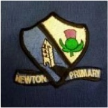
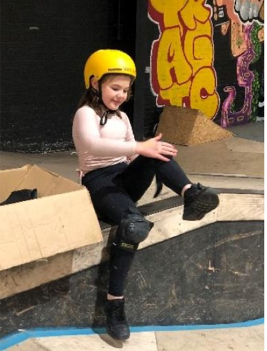
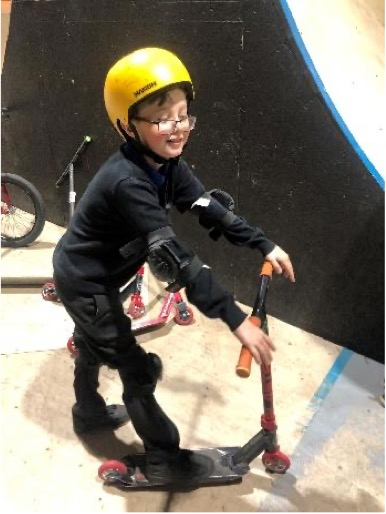
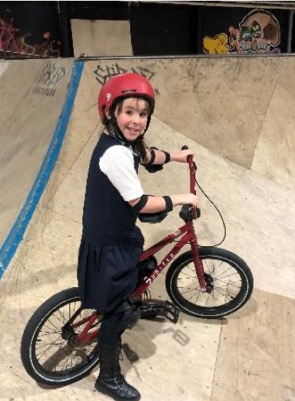
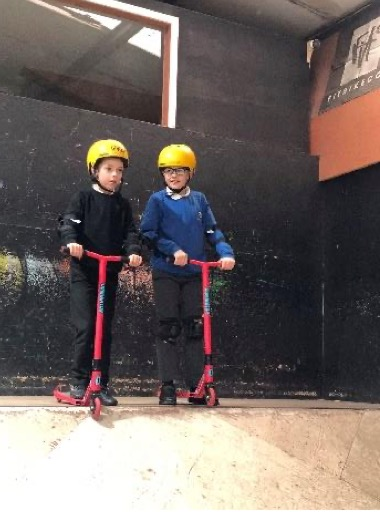
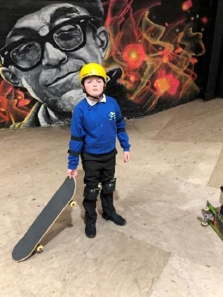
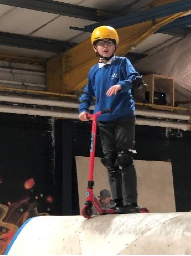

Shred Skatepark Report 2

Rotary Club of Ayr
Newton Primary Shred Skatepark Project
(A partnering arrangement between Newton Primary School and Shred Skatepark of Ayr sponsored and facilitated by Rotary)
Sustainable Progress during this current School Year 2023-24
Following our earlier report of Rotary Club of Ayr's initiated 'Newton Primary Skatepark Project' for the School Year 2022/23, this update refers to the continuation of the project during this School Year 2023/24.
Realising the children's enthusiasm and enjoyment whilst improving their good health, it was decided to continue with the project's attainment and sustainability as part of the school's extracurricular activities. This has allowed an increase in the number of children wishing to be involved, gaining self confidence and wellbeing from this Skatepark Project as described in our initial report.
This year's project commenced in September'23 involving 70 children, comprising 5 groups of fourteen, with each group being tutored and supervised over 6-weeks, during the overall period of 9 months between September'23 and May'24.






Add the remainder of Report 2 here.